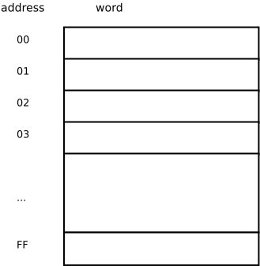
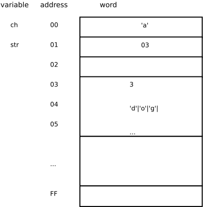
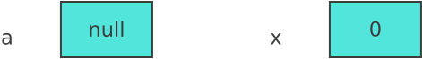
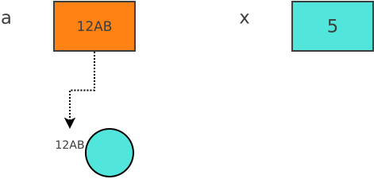
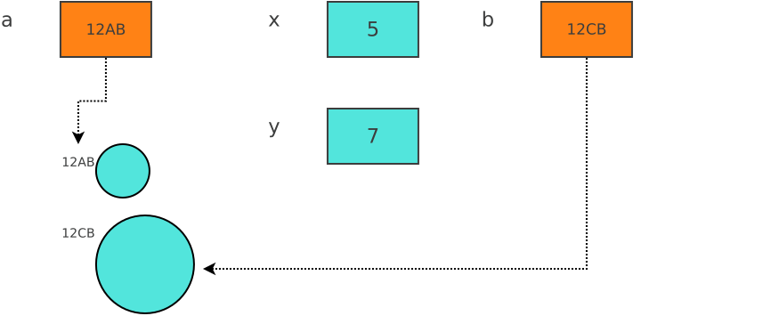
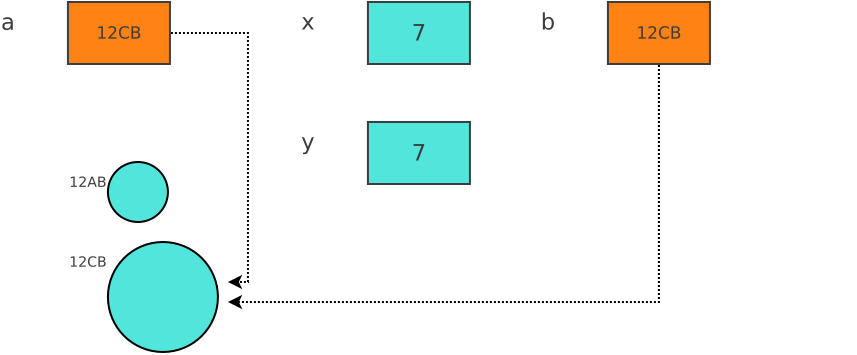

Chapter 0.2
1 Behind the Scenes in Java
1.1 Memory
If the discussion in this section is a bit too difficult for you to understand, please refer to the last Computer Architecture discussion we had in CSC132. Recall that during our discussion of how a computer works, we talked about the makeup of memory. At a very basic level, memory is made up of “words” which is a unit of memory. Each word has a specific address, and is used to store both data and the instructions that work upon that data. The diagram below shows a sample memory space with 256 words.

1.2 Storing variables
The operating system is in charge of mapping variables to addresses and the data stored in that address and there are two main ways that it does this.
With direct addressing , the location associated with the variable stores the value of that variable. This is typically the case with primitive data types e.g. characters, int, float, long, etc. The variable is said to be stored by value.
With indirect addressing, the location associated with the variable stores the address of another location that has the actual value. Think of it as the memory location is storing the keys of the actual place where the value is stored. This is typically the case with complex data types e.g. strings, objects created from classes, etc. The variable is said to be stored by reference.

char ch = ‘a’; //direct addressing
String str = “dog”;
/*
indirect addressing. str has the address 03 and the actual value is found at that address.
This consists of the data plus some extra information that could help with some extra manipulation.
This is sometimes represented as
str -> dog
**spoiler alert: This arrow representation will come back later when we discuss linked lists.*/1.3 What does this mean for our programming?
1.3.1 Creating objects
// This is a basic class representing a circle All it stores is the radius.
// It has a constructor, an accessor and a mutator.
class Circle
{
private int radius;
public Circle(int radius)
{
setRadius(radius);
}
public void setRadius(int radius)
{
if (radius>=0)
this.radius = radius;
else
this.radius =1;
}
public int getRadius()
{
return this.radius;
}
public String toString()
{
return "This circle has a radius of " + this.getRadius();
}
}Given the Circle class defined above, let’s write some lines of code and see what happens in memory, and how it can be represented diagramatically. We shall also be manipulating a primitive type (int) so that you can notice the contrast between the two.
// Simple declaration of two variables.
// One is an object of type Circle and the other is a primitive integer
Circle a;
int x; 
Notice that without any initialization, Java will put some default values in those memory locations. For objects, the default value is null to mean the lack of a reference (or address). The default value for ints is 0.
FYI null can also be used in object comparison
if (a== null)
System.out.println(“Circle has not been initialized”);// Assigning initial values to both a and x.
// For a, this involves creating a circle object and passing it any required parameters.
a = new Circle(5);
x = 5; 
While the location associated with x stores the actual value of x (i.e. 5), the location associated with a stores the address of a location in memory (12AB) where the information representing the circle object is actually stored. This means x is stored by value, and a is stored by reference. Declaration and Initialization can also be done in a single step.
Circle b = new Circle(7);
int y = 7;
Both a and b are objects and therefore are stored by reference while x and y which are primitive types are stored by value.
1.3.2 Assigning objects
When a primitive type is assigned, the value stored in the location is copied to the new location.
x = y; // This copies the value that was in y into x.
a = b; // This copies the reference stored in b into aHowever, when an object is assigned, whatever is stored in the source location is copied into the target location. Recall that an address/reference is actually what is stored and not the actual value. Therefore object assignment has the unique effect of making both variables refer to the same copy of the object instead of having two copies of the object.

There are a couple of implications of this behavior.
- Firstly, the original circle located at 12AB is no longer accessible. The memory location is being used to store the circle, but that circle can no longer be used since there is no way to get to it. The space it takes up is now referred to as garbage. Java automatically cleans garbage(garbage collection) so that the computer/program has access to that memory eventually. This is not the case in other languages.
Circle c;
for (int n = 0; n < 100; n++)
{
c = new Circle(n*2); // create a circle with a radius twice the size of n
}
/* Notice that when this loop finishes execution, you will only have access to the last
created circle and not the 99 circles before that (which now constitute garbage) */- Secondly, and perhaps more importantly, since a and b refer to the exact same circle (there are two keys to the same house), then any changes made to the copy a (whether intentional or accidental) also affect the original b.
1.3.3 Objects as parameters to functions/methods
That last point we discussed might seem very small and avoidable but in reality it isn’t. That’s because whenever an object is passed as a parameter in a function, it is passed by reference. So even if it might have another variable name in the function, any changes to the object will affect the original object.
class Test
{
public static void main(String [] args)
{
Circle a, b, c;
a = new Circle(3);
b = new Circle(5);
c = combinedCircle(a, b);
System.out.println(a); // a will have a radius of 10 because it was changed
System.out.println(b); // “unintentionally” in the combinedCircle function.
System.out.println(c);
}
public static Circle combinedCircle ( Circle x, Circle y)
{
Circle z = new Circle(x.getRadius() + y.getRadius());
x.setRadius(10); // statement that changes one of the input arguments, and
// inadvertently changes the original copy in the process.
return z;
}
}1.3.4 Arrays
We have mentioned how primitive types are stored and passed (i.e. by value) and how objects are stored and passed (i.e. by reference). But what about arrays? Recall that with primitive types, the variable name is mapped directly to a memory location that contains the value associated with that variable (by value). Conversely, with objects, the variable name is mapped to a memory location that contains the address of another place in memory where the object state is being stored (by reference). Arrays (of any type) are treated like objects. That means that the array name is mapped to a memory location that contains the address of the first of a block of memory locations that contain the array elements i.e. arrays are passed by reference. This means that if you pass an array as an argument to a function, that function is in fact dealing with the original array and therefore any changes to the array will last even after control has been passed back to the original function.
import java.util.*
class Trial
{
public static void main(String [] args)
{
Random r = new Random();
int [] arr = new int [100]; // create an array of 100 integers (by default all set to 0)
for (int i = 0; i < arr.length; i++)
arr[i] = r.nextInt(1000); // random integer from 0-1000
// Sort the array
selectionSort(arr); // Note that this function only takes an argument and does not return
// any values. Nonetheless, it is capable of making changes to the
// original array since it has the reference to that array.
// Print out the array
for (int i = 0; i < arr.length; i++)
System.out.print(arr[i] + “ “);
}
public static void selectionSort(int [] list)
{
// a sort function that doesn’t have a return type (i.e. void) but actually affects the
// variable in the original function. So in an essence it does return something
}
}Notice in the example above how the selectionSort function doesn’t have a return type but is still able to affect a variable in the original main function.
1.3.5 Arrays of Objects
Occasionally, it is necessary to create an array of objects. If objects are mapped by reference, and arrays are mapped by reference, then what about arrays of objects?
int [] arr = new int [10]; // an array of primitives (for comparison)
Circle [] circles = new Circle [10]; // an array of circle objects which by default are all set
// null. Any of the circle elements can now be initialized.
circles[0] = new Circle(5);
circles[4] = new Circle(8);The variable name of the array will store the first address of a block of memory cells that have been set aside to store addresses for the objects. Think of it as circles is storing a key, and that key opens a chest of drawers each of which has another key to a circle in another location. Incidentally, this idea of a variable name storing a reference to an array of references is the same way a multidimensional array is dealt with.
int [][] arr = new int [4][10]; // a 2D array of 4 rows and 10 columns.
arr[2][8] = 103; // store the value 103 in the 3rd row and 9th column.In the example above, arr is storing a key. That key opens up a row of drawers. In each of those drawers is another key that opens up a row of drawers where the values are actually kept. In more official terms, arr is a reference to a single dimensional array that contains references. Each of those references gives access to their own single dimensional array of values. So a 2D array is an array of arrays.
References:
Object Oriented Data Structures using Java (4th Edition). Nell Dale, Daniel T. Joyce, Chip Weems.